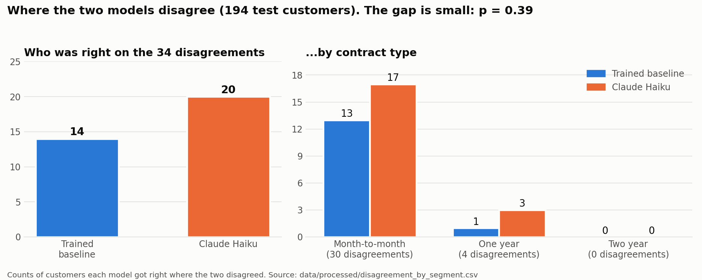

Can an AI replace a churn model?
- Python
- scikit-learn
- Anthropic API
- Evaluation
I compared a trained logistic-regression model with Claude Haiku (given no training) on telecom customers, then checked whether the AI's written reasons held up.
- 194 customers tested
- 34 disagreements
- Haiku 20 vs baseline 14
- p = 0.39 (not significant)
What I learned
- The two models scored about the same but made different mistakes.
- The AI behaved like a tenure rule: it flagged 91% of new customers as leavers.
- A right prediction does not mean a sound reason.